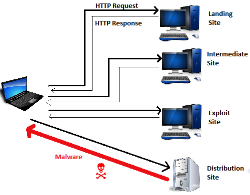

Drive-by Downloads
Silently-installed software
What are drive-by downloads?
Drive-by downloads are attacks designed to silently and automatically download and install malware or other software onto a user's device. Usually made possible by exploits in browsers and their plugins, drive-by downloads can have serious consequences, especially because many common antivirus softwares are incapable of preventing them. A user is usually exposed to drive-by downloads via popups and links in phishing emails. Generally, the aim of such an attack will be to utilize vulnerabilities in web browsers, their plugins, and their extensions to take control of a client's system or install and execute programs of the attacker's choice.
How do drive-by downloads work?
This diagram demonstrates how a simplified drive-by download attack would occur. It begins with the attacker creating a malicious website (potentially mimicking a legitimate website, like in a phishing attack), which injects malicious code into its clients. When the client visits a legitimate site, a signal is also sent out to an exploit site. In a sophisticated attack, several intermediate websites will also be redirected to, making it harder to identify the exploit site. The exploit site houses elaborate malicious code that searches for and takes advantages of exploits in the client's current OS and web browser. If one is detected, it is utilized do install the malware of the attacker's choice directly to the user's device, all without alerting the user of any unusual activity.
Another common form of drive-by downloads involves implanting hidden, malicious payloads into authorized downloads. Such an attack involves some sort of attacker-created front for malware delivery, which installs more than the user believes will be installed.
Drive-by downloads may also be relatively non-malicious, installing adware or harmless PUPs (potentially unwanted programs) onto the client's machine. However, most of our work on this project is concentrated around the dangerous, malware-spreading usages of drive-by downloads.
Drive-by downloads in 50 seconds
What are some notable examples of drive-by downloads?
Great question! See the menu to learn about four of history's most prominent drive-by download attacks!